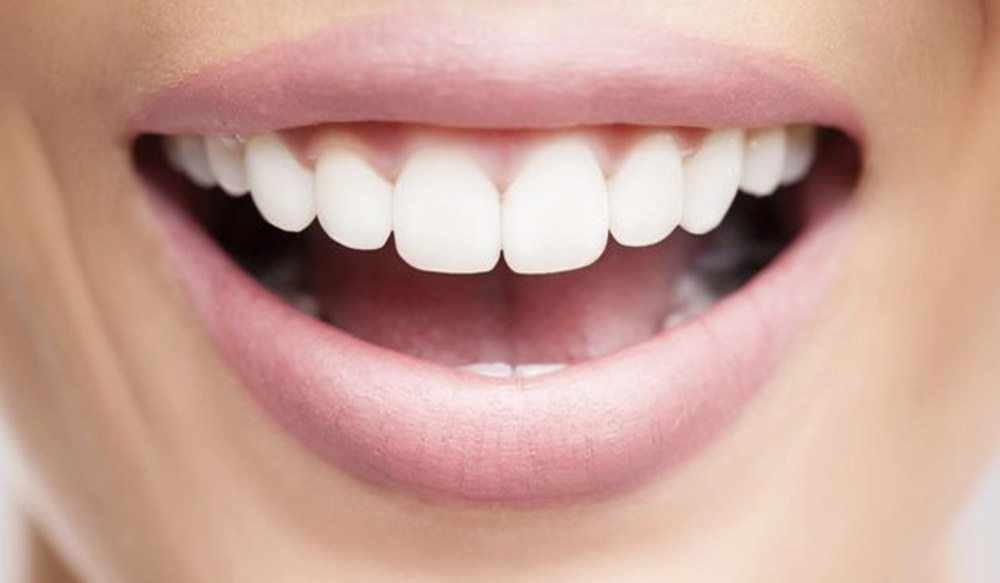

5 Dicas de Saúde Bucal para Toda a Vida
Manter um sorriso saudável exige compromisso e disciplina. Algumas das dicas mais importantes sobre saúde bucal parecem simples, mas são as mais ignoradas no dia a dia. Com essas 5 dicas práticas da equipe MD Frossard, você terá o guia ideal para sua rotina diária.

1) Escove os dentes todos os dias
Apesar de todos saberem da necessidade da correta escovação, muitos não praticam esse hábito de forma adequada — realizam a escovação errada ou sem a devida atenção. Na escovação dos dentes, existe uma técnica correta para a sua higienização; se não for seguida, pode não limpar os dentes de forma satisfatória.
A escovação antes de dormir é a mais importante de todas. Ao dormir, a produção de saliva diminui, o que favorece a proliferação bacteriana. Por isso, nunca vá dormir sem escovar os dentes.
2) Use o Fio Dental
Provavelmente esse é o ponto mais controverso: todos sabem da importância do fio dental, mas poucos realmente o usam de forma eficaz. O fio dental é essencial para manter os dentes e, principalmente, a gengiva saudável.
Sim, é difícil usá-lo no início — pode até machucar a gengiva em algumas regiões. Mas com a prática, esse hábito se torna fácil e você notará uma mudança significativa na saúde bucal. Se usado pelo menos antes de dormir, você terá um grande avanço na sua saúde gengival.
3) A língua também faz parte da higienização
A língua faz parte da nossa boca — mas boa parte das pessoas não a higieniza. Quando nos alimentamos, parte do alimento fica aderida à superfície lingual, formando a chamada saburra lingual. É preciso remover essa camada da língua para evitar o mau hálito.
Use um raspador de língua (mais eficiente) ou a própria escova, fazendo movimentos da parte de trás para a frente. Faça isso pelo menos uma vez ao dia, de preferência antes de dormir.
4) O uso do bochecho não é obrigatório, mas ajuda
Para uma boa higiene bucal, a escovação e o uso do fio dental são suficientes. Mas se você quiser melhorar ainda mais, o bochecho pode ser interessante — ele complementa a higiene, deixando o hálito mais fresco e ajudando a remover bactérias residuais.
Importante: nunca use somente o bochecho para realizar a higiene bucal. Ele é apenas um complemento ao uso da escova e do fio dental, e jamais os substitui.
Abordagem Preventiva
Nossa filosofia de trabalho foca na prevenção: evitar que pequenos problemas se tornem tratamentos complexos e invasivos. Uma higiene adequada em casa é o primeiro passo.
5) A ida ao dentista para revisão é essencial
A cada 6 meses a 1 ano, devemos ir ao dentista para verificar se a saúde da gengiva e dos dentes está correta. Somente o dentista pode verificar se seus dentes estão realmente saudáveis — ele pode identificar um problema dentário na fase inicial, evitando grandes complicações futuras.
Portanto, marque sua consulta de revisão. Cuide do seu sorriso com os especialistas da MD Frossard — ligue para (21) 3513-8479 ou entre em contato via WhatsApp.